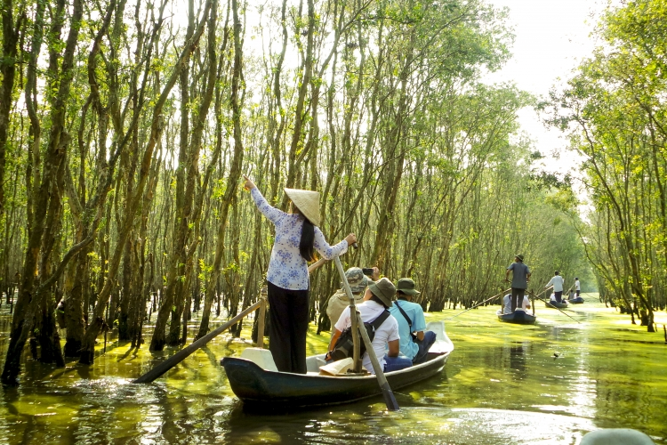
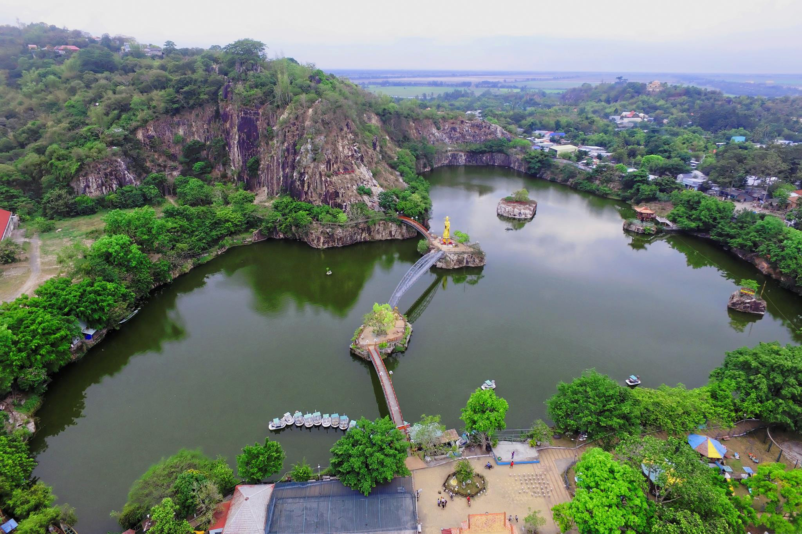
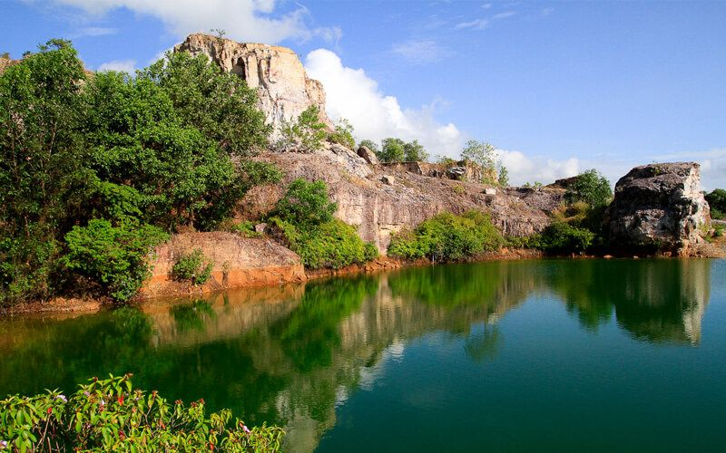

Rừng tràm Trà Sư

Rừng tràm Trà Sư là một trong các địa điểm du lịch nổi tiếng ở An Giang. Địa điểm này sẽ rất thích hợp dành cho những du khách thích chiêm ngưỡng và khám phá vẻ đẹp thiên nhiên hùng vĩ. Bạn sẽ bất ngờ và choáng ngợp trước khung cảnh thiên nhiên mênh mông, bát ngát và có cơ hội khám phá sự độc đáo của rừng ngập nước cùng hơn 70 loài chim muông
Read More
Hồ Ông Thoại - Núi Sập

Đến với các địa điểm du lịch An Giang nổi tiếng, du khách phải ghé thăm khu du lịch Hồ Ông Thoại – Núi Sập để có thể cảm nhận trọn vẹn vẻ đẹp của vùng miền Tây sông nước. Đây được xem là địa điểm du lịch đẹp ở An Giang bởi có nhiều ngọn núi trùng điệp, cao vút. Bởi thế mà nhiều du khách đã từng đến đều cho rằng nơi đây như chốn bồng lai tiên cảnh vì vẻ đẹp thiên nhiên của nó.
Read More
Hồ Tà Pạ

Hồ Tà Pạ đang được các bạn trẻ săn đón nhiệt tình với cái tên “tuyệt tình cốc” An Giang. Đây là điểm đến được liệt kê vào danh sách các địa điểm du lịch mới ở An Giang. Khung cảnh của hồ Tà Pạ như một bức tranh sông nước hữu tình tuyệt đẹp khiến bao du khách phải xách ba lô lên và đi.
Read More